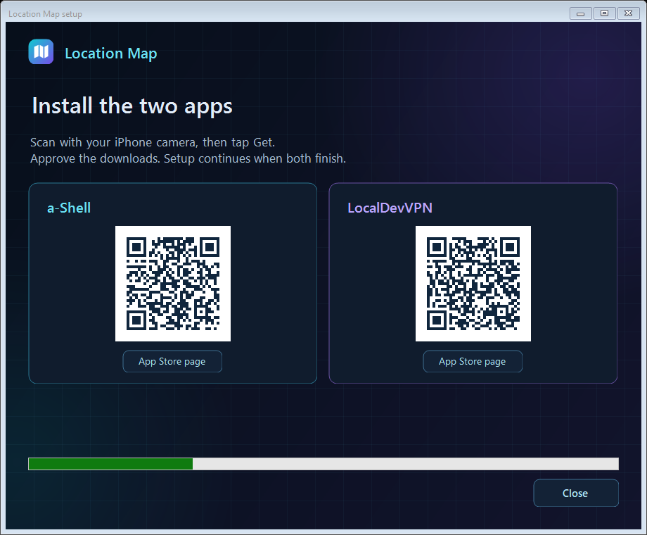

Download
Choose Download Windows setup. Find Location-Map-Windows.zip in your Downloads folder.
IPHONE LOCATION SIMULATION
Download the Windows setup, connect your iPhone, and follow the steps on your screen.
Keep this guide open on your phone, and open the download on your Windows computer.
Download Windows setupSetup preview. Computer checks passed. A complete install on a fresh iPhone still needs a device test.

START HERE
Choose Download Windows setup. Find Location-Map-Windows.zip in your Downloads folder.
Right-click the ZIP. Choose Extract All, then Extract. Open the new Location Map folder.
Plug in one iPhone and unlock it. Double-click START HERE.cmd. Keep both the phone and setup window open.
You can run the extracted folder from your computer or copy the whole folder onto a USB drive.
ON YOUR IPHONE
Use this guide alongside the setup window. Pick the step you’re on.
KEEP THE CABLE CONNECTED
Unlock the iPhone. If it asks “Trust This Computer?”, tap Trust and enter the iPhone passcode on the phone.
Choose this on your own iPhone.
TrustThe setup window will notice the phone automatically. If it cannot, use its Apple Devices button to get Apple’s Windows connection app.
ONE RESTART
If the setting is missing, leave the phone connected and trusted, and keep setup open. The installer makes this setting appear.
APP STORE DOWNLOADS
Scan each code with the iPhone camera, or tap an app card if you’re reading this on the phone. Tap Get in the App Store and approve the download if asked.
Wait until both App Store buttons say Open. A download icon on the Home Screen does not always mean it has finished.
ONE-TIME APPROVAL
Keep the helper installed. Location Map’s shortcut connects this local VPN for you on later launches.
WAIT FOR THE INSTALLER’S MESSAGE
The setup window tells you when the files are ready and shows the exact file location.
Already added the shortcut? Run it again when setup asks. The installer waits for a new launch before continuing.
KEEP THE HELPERS INSTALLED
AFTER SETUP FINISHES
Away from Wi-Fi, let the shortcut’s brief cellular pause finish. If a launch is interrupted, check Cellular Data is back on before trying again.
The complete fresh-phone flow still needs a real-device test. These checks are part of trying this preview on your phone.
Step 1 of 7
IF YOU GET STUCK
Extract the ZIP first. Open START HERE.cmd from the extracted Location Map folder. Leave its Support folder beside it.
This installer needs a Windows PC with an Intel or AMD 64-bit processor. It does not run on a Mac or a Windows ARM device.
Unlock the phone, keep its USB cable connected, and tap Trust if asked. Try a cable that can transfer data. The setup window has a button for Apple Devices if the PC needs Apple’s connection software.
This approach uses App Store apps rather than a weekly signed sideload. There is no weekly sideload renewal. Future iOS or helper-app changes can still require an updated setup.
The launcher includes cellular handling. Wi-Fi-off Simulate and Stop checks passed on an earlier iPhone build. This exact release’s full fresh-phone, unplugged-cellular and reboot flow has not been verified.
Reconnect and unlock the same iPhone. Open START HERE.cmd again, or choose Try again. Setup can reuse matching files it already copied.
Computer checks cover the packaged app, installer flow, interrupted transfers, damaged and missing files, Windows startup and cancellation. The complete fresh-iPhone installation remains unverified.
Download, extract, then open START HERE.cmd.